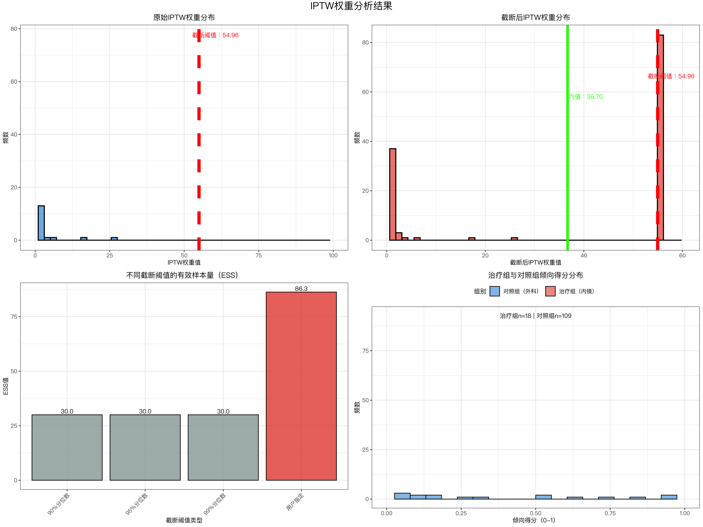

# ==============================================================================
# 无治疗病例分析（含IPTW权重）- Jupyter Notebook专用R代码（最终稳定版）
# 适配列名：BMI、包裹性坏死、改良CTSI评分、囊肿（1、单发0、多发）、年龄、性别（1：男、2：女）、囊肿最大径mm
# 核心优化：删除冗余select操作，解决参数无效问题
# ==============================================================================
# ------------------------------------------------------------------------------
# 1. 环境配置与包加载
# ------------------------------------------------------------------------------
rm(list = ls())
# 首次运行安装包（取消注释执行，仅一次）
# install.packages(c(
# "readxl", "dplyr", "tidyr", "ggplot2", "grid", "gridExtra", "boot",
# "Matching", "caret", "broom", "knitr", "kableExtra", "openxlsx",
# "scales", "stringr", "showtext"
# ))
suppressMessages({
library(readxl) # 读取Excel
library(dplyr) # 数据处理
library(tidyr) # 数据清洗
library(ggplot2) # 可视化
library(grid) # textGrob依赖
library(gridExtra) # 多图排列
library(boot) # Bootstrap
library(Matching) # 倾向得分匹配
library(caret) # 预处理（preProcess）
library(broom) # 模型整理
library(knitr) # 表格输出
library(kableExtra) # 表格美化
library(openxlsx) # 保存Excel
library(scales) # 数据缩放
library(stringr) # 字符串处理
library(showtext) # 中文显示
})
# 中文配置（Mac适配苹方字体）
showtext_auto(enable = TRUE)
if (Sys.info()["sysname"] == "Darwin") {
font_add("myfont", "/System/Library/Fonts/PingFang.ttc")
} else if (Sys.info()["sysname"] == "Windows") {
font_add("myfont", "C:/Windows/Fonts/msyh.ttc")
} else {
font_add("myfont", "/usr/share/fonts/wqy/wqy-microhei.ttc")
}
theme_set(
theme_bw() +
theme(
text = element_text(family = "myfont", size = 10),
axis.text = element_text(family = "myfont", size = 9),
legend.text = element_text(family = "myfont", size = 9),
plot.title = element_text(family = "myfont", size = 12, face = "bold", hjust = 0.5),
axis.title = element_text(family = "myfont", size = 10, face = "bold")
)
)
options(repr.plot.res = 300, repr.plot.width = 16, repr.plot.height = 12)
options(warn = -1)
# ------------------------------------------------------------------------------
# 2. 工作目录设置（你的Mac路径）
# ------------------------------------------------------------------------------
current_wd <- "/Users/wangguotao/Downloads/ISAR/Doctor"
setwd(current_wd)
# 创建结果目录
result_dir <- file.path(current_wd, "无治疗病例分析结果")
if (!dir.exists(result_dir)) {
dir.create(result_dir, recursive = TRUE)
cat(sprintf("✅ 结果目录创建成功：%s\n", result_dir))
} else {
cat(sprintf("✅ 结果目录已存在：%s\n", result_dir))
}
# ------------------------------------------------------------------------------
# 3. 数据读取（列名清洗+核心列验证）
# ------------------------------------------------------------------------------
data_file <- file.path(current_wd, "数据分析总表.xlsx")
# 定义原始数据必须包含的核心列
raw_required_cols <- c(
"BMI", "包裹性坏死", "改良CTSI评分", "囊肿（1、单发0、多发）",
"年龄", "性别（1：男、2：女）", "囊肿最大径mm",
"术前既往治疗（0、无治疗2、仅经皮穿刺3、仅内镜治疗1、接受过外科手术（无论是否联合其他治疗））",
"手术方式（1：内镜2：外科）", "第一次住院总费用", "累计住院费用"
)
load_analysis_data <- function(path) {
if (!file.exists(path)) {
stop(sprintf("❌ 数据文件不存在：%s", path))
}
# 读取数据并清洗列名（去除空格和控制字符）
data <- read_excel(path)
colnames(data) <- str_trim(colnames(data)) # 去除列名前后空格
colnames(data) <- gsub("[[:cntrl:]]", "", colnames(data)) # 去除不可见控制字符
rownames(data) <- 1:nrow(data)
# 验证原始核心列是否存在
missing_raw_cols <- setdiff(raw_required_cols, colnames(data))
if (length(missing_raw_cols) > 0) {
stop(sprintf("❌ 缺失原始核心列：%s\n当前实际列名：%s",
paste(missing_raw_cols, collapse = ", "),
paste(colnames(data), collapse = ", ")))
}
cat(sprintf("\n=== 数据基本信息 ==="))
cat(sprintf("\n总病例数：%d 例 | 总变量数：%d 个", nrow(data), ncol(data)))
cat(sprintf("\n原始核心列名验证通过：%s\n", paste(raw_required_cols, collapse = ", ")))
return(data)
}
data <- load_analysis_data(data_file)
# ------------------------------------------------------------------------------
# 4. 无治疗病例筛选（删除冗余select，直接保留筛选结果）
# ------------------------------------------------------------------------------
filter_no_treatment <- function(data) {
# 治疗状态列名（清洗后）
treat_status_col <- "术前既往治疗（0、无治疗2、仅经皮穿刺3、仅内镜治疗1、接受过外科手术（无论是否联合其他治疗））"
treat_status_col <- str_trim(treat_status_col)
# 统计治疗状态分布
treat_dist <- data %>%
group_by(!!sym(treat_status_col)) %>%
summarise(病例数 = n(), .groups = "drop") %>%
rename(治疗状态代码 = !!sym(treat_status_col))
rownames(treat_dist) <- 1:nrow(treat_dist)
cat("\n=== 治疗状态分布 ===")
print(kable(treat_dist, align = "lc", caption = "治疗状态代码（0=无治疗）") %>%
kable_styling(bootstrap_options = "striped", full_width = FALSE))
# 筛选无治疗病例（代码=0）- 直接筛选，无需额外select（筛选默认保留所有列）
data_no_treat <- data %>%
filter(!!sym(treat_status_col) == 0)
rownames(data_no_treat) <- 1:nrow(data_no_treat)
# 验证筛选后列数是否与原始一致（确保未丢失列）
if (ncol(data_no_treat) != ncol(data)) {
stop(sprintf("❌ 筛选后列数异常：原始%d列，筛选后%d列", ncol(data), ncol(data_no_treat)))
}
cat(sprintf("\n=== 筛选结果 ==="))
cat(sprintf("\n原始病例数：%d 例", nrow(data)))
cat(sprintf("\n无治疗病例数：%d 例（占比：%.1f%%）\n",
nrow(data_no_treat), nrow(data_no_treat)/nrow(data)*100))
return(data_no_treat)
}
data_filtered <- filter_no_treatment(data) # 无治疗病例数据集（保留所有原始列）
# ------------------------------------------------------------------------------
# 5. 描述性统计与随机匹配（简化匹配逻辑，删除冗余select）
# ------------------------------------------------------------------------------
descriptive_matching <- function(data_no_treat) {
# 数值型核心协变量（清洗后）
numeric_covs <- c(
"BMI", "包裹性坏死", "改良CTSI评分", "囊肿（1、单发0、多发）",
"年龄", "性别（1：男、2：女）", "囊肿最大径mm"
)
numeric_covs <- str_trim(numeric_covs)
# 检查数值协变量是否存在
missing_numeric_covs <- setdiff(numeric_covs, colnames(data_no_treat))
if (length(missing_numeric_covs) > 0) {
stop(sprintf("❌ 缺失数值协变量：%s", paste(missing_numeric_covs, collapse = ", ")))
}
# 描述性统计
desc_stats <- data_no_treat[numeric_covs] %>%
summarise_all(list(
均值 = ~round(mean(., na.rm = TRUE), 2),
标准差 = ~round(sd(., na.rm = TRUE), 2),
最小值 = ~round(min(., na.rm = TRUE), 2),
最大值 = ~round(max(., na.rm = TRUE), 2)
))
rownames(desc_stats) <- 1:nrow(desc_stats)
cat("\n=== 无治疗病例描述性统计 ===")
print(kable(desc_stats, align = "c", caption = "核心协变量统计（n=无治疗病例数）") %>%
kable_styling(bootstrap_options = "striped", full_width = FALSE))
# 随机匹配（50%抽样）- 直接索引筛选，无需额外select
set.seed(42)
matched_idx <- sample(nrow(data_no_treat), size = floor(nrow(data_no_treat)*0.5), replace = FALSE)
matched_group <- data_no_treat[matched_idx, ] # 匹配组（保留所有列）
unmatched_group <- data_no_treat[-matched_idx, ] # 非匹配组（保留所有列）
rownames(matched_group) <- 1:nrow(matched_group)
rownames(unmatched_group) <- 1:nrow(unmatched_group)
# 组间平衡性检验（生成SMD列）
balance_test <- function(matched, unmatched, covs) {
result_df <- data.frame()
for (cov in covs) {
g1 <- matched[[cov]] %>% na.omit()
g2 <- unmatched[[cov]] %>% na.omit()
if (length(g1) < 2 || length(g2) < 2) {
temp <- data.frame(
协变量 = cov,
t统计量 = NA,
p值 = NA,
匹配组均值 = ifelse(length(g1) > 0, round(mean(g1), 2), NA),
非匹配组均值 = ifelse(length(g2) > 0, round(mean(g2), 2), NA),
SMD = NA,
平衡性 = "样本量不足"
)
result_df <- rbind(result_df, temp)
next
}
# t检验与SMD计算
t_res <- t.test(g1, g2, var.equal = FALSE)
mean1 <- mean(g1)
mean2 <- mean(g2)
std1 <- sd(g1)
std2 <- sd(g2)
smd <- (mean1 - mean2) / sqrt((std1^2 + std2^2)/2)
temp <- data.frame(
协变量 = cov,
t统计量 = round(t_res$statistic, 4),
p值 = round(t_res$p.value, 4),
匹配组均值 = round(mean1, 2),
非匹配组均值 = round(mean2, 2),
SMD = round(smd, 4),
平衡性 = ifelse(abs(smd) < 0.1, "良好", "需改善")
)
result_df <- rbind(result_df, temp)
}
rownames(result_df) <- 1:nrow(result_df)
return(result_df)
}
balance_result <- balance_test(matched_group, unmatched_group, numeric_covs)
# 输出平衡性结果
cat("\n=== 匹配组vs非匹配组平衡性 ===")
print(kable(balance_result[, c("协变量", "p值", "SMD", "平衡性")],
align = "lccc", caption = "协变量平衡性（SMD<0.1=良好）") %>%
kable_styling(bootstrap_options = "striped", full_width = FALSE))
good_balance <- sum(balance_result$平衡性 == "良好", na.rm = TRUE)
cat(sprintf("\n✅ 平衡良好的协变量：%d/%d 个\n", good_balance, length(numeric_covs)))
return(list(
matched_group = matched_group,
unmatched_group = unmatched_group,
balance_result = balance_result,
numeric_covs = numeric_covs
))
}
match_output <- descriptive_matching(data_filtered)
matched_group <- match_output$matched_group # 匹配组
balance_result <- match_output$balance_result # 平衡性结果（含SMD）
numeric_covs <- match_output$numeric_covs # 数值协变量
# ------------------------------------------------------------------------------
# 6. Bootstrap成本分析（验证费用列）
# ------------------------------------------------------------------------------
bootstrap_cost <- function(data_no_treat, matched_group) {
cost_col <- "第一次住院总费用"
cost_col <- str_trim(cost_col)
# 验证费用列是否存在
if (!cost_col %in% colnames(data_no_treat)) {
stop(sprintf("❌ 缺失费用列：%s\n当前列名：%s", cost_col, paste(colnames(data_no_treat), collapse = ", ")))
}
# Bootstrap抽样函数
boot_mean <- function(series, n_iter = 2000) {
valid_series <- series %>% na.omit()
n <- length(valid_series)
if (n < 10) stop(sprintf("❌ 有效样本不足（%d例），需≥10例", n))
set.seed(42)
boot_means <- replicate(n_iter, mean(sample(valid_series, size = n, replace = TRUE)))
return(list(
raw_mean = mean(valid_series),
boot_mean = mean(boot_means),
boot_std = sd(boot_means),
ci95_lower = quantile(boot_means, 0.025),
ci95_upper = quantile(boot_means, 0.975),
quantile95 = quantile(boot_means, 0.95),
boot_series = boot_means
))
}
# 总样本与匹配组分析
total_boot <- boot_mean(data_no_treat[[cost_col]])
matched_boot <- boot_mean(matched_group[[cost_col]])
# 输出结果
cat("\n=== Bootstrap成本分析（第一次住院总费用）===")
cat(sprintf("\n【无治疗总样本（n=%d）】", length(total_boot$boot_series)))
cat(sprintf("\n 原始均值：%.2f 元 | Bootstrap均值：%.2f 元", total_boot$raw_mean, total_boot$boot_mean))
cat(sprintf("\n 95%%置信区间：%.2f ~ %.2f 元 | 95%%分位数：%.2f 元",
total_boot$ci95_lower, total_boot$ci95_upper, total_boot$quantile95))
cat(sprintf("\n\n【匹配组（n=%d）】", length(matched_boot$boot_series)))
cat(sprintf("\n 原始均值：%.2f 元 | Bootstrap均值：%.2f 元", matched_boot$raw_mean, matched_boot$boot_mean))
cat(sprintf("\n 95%%置信区间：%.2f ~ %.2f 元 | 95%%分位数：%.2f 元\n",
matched_boot$ci95_lower, matched_boot$ci95_upper, matched_boot$quantile95))
return(list(
total_boot = total_boot,
matched_boot = matched_boot
))
}
boot_output <- bootstrap_cost(data_filtered, matched_group)
total_boot <- boot_output$total_boot # 总样本Bootstrap结果
matched_boot <- boot_output$matched_boot# 匹配组Bootstrap结果
# ------------------------------------------------------------------------------
# 7. 基础分析可视化（稳定运行）
# ------------------------------------------------------------------------------
plot_basic <- function(total_boot, matched_boot, balance_result, numeric_covs) {
# 图1：总样本Bootstrap成本分布
p1 <- data.frame(费用 = total_boot$boot_series) %>%
ggplot(aes(x = 费用)) +
geom_histogram(bins = 35, fill = "#3498db", alpha = 0.7, color = "black", linewidth = 0.8) +
geom_vline(xintercept = total_boot$boot_mean, color = "red", linetype = "dashed", linewidth = 2) +
geom_vline(xintercept = c(total_boot$ci95_lower, total_boot$ci95_upper),
color = "green", linetype = "dotted", linewidth = 2) +
scale_x_continuous(labels = ~sprintf("%.1f", ./10000), name = "第一次住院总费用（万元）") +
labs(title = "总样本Bootstrap成本分布", y = "频数") +
annotate("text", x = total_boot$boot_mean*1.1, y = max(hist(total_boot$boot_series, bins=35, plot=FALSE)$counts)*0.8,
label = sprintf("均值：%.0f元", total_boot$boot_mean), color = "red", family = "myfont", size = 3.5)
# 图2：匹配组Bootstrap成本分布
p2 <- data.frame(费用 = matched_boot$boot_series) %>%
ggplot(aes(x = 费用)) +
geom_histogram(bins = 35, fill = "#e74c3c", alpha = 0.7, color = "black", linewidth = 0.8) +
geom_vline(xintercept = matched_boot$boot_mean, color = "red", linetype = "dashed", linewidth = 2) +
geom_vline(xintercept = c(matched_boot$ci95_lower, matched_boot$ci95_upper),
color = "green", linetype = "dotted", linewidth = 2) +
scale_x_continuous(labels = ~sprintf("%.1f", ./10000), name = "第一次住院总费用（万元）") +
labs(title = "匹配组Bootstrap成本分布", y = "频数") +
annotate("text", x = matched_boot$boot_mean*1.1, y = max(hist(matched_boot$boot_series, bins=35, plot=FALSE)$counts)*0.8,
label = sprintf("均值：%.0f元", matched_boot$boot_mean), color = "red", family = "myfont", size = 3.5)
# 图3：协变量平衡性森林图
balance_plot_df <- balance_result %>%
filter(!is.na(SMD)) %>%
mutate(
颜色 = ifelse(abs(SMD) < 0.1, "#2ecc71", "#f39c12"),
协变量 = factor(协变量, levels = rev(unique(协变量)))
)
p3 <- balance_plot_df %>%
ggplot(aes(x = SMD, y = 协变量)) +
geom_vline(xintercept = 0, color = "gray", linewidth = 1.5) +
geom_vline(xintercept = c(-0.1, 0.1), color = "orange", linetype = "dashed", linewidth = 1.2) +
geom_point(aes(color = 颜色, fill = 颜色), size = 4, shape = 21) +
geom_text(aes(label = sprintf("%.3f", SMD), hjust = ifelse(SMD >= 0, 1.1, -0.1)),
family = "myfont", size = 3) +
scale_color_identity() +
scale_fill_identity() +
labs(title = "协变量平衡性森林图", x = "标准化均差（SMD）", y = "") +
annotate("text", x = 0.1, y = 1, label = "SMD=±0.1（平衡阈值）",
color = "orange", family = "myfont", size = 3.5, hjust = 0)
# 图4：核心协变量均值对比
mean_compare_df <- data.frame(
协变量 = rep(numeric_covs, 2),
组别 = rep(c("匹配组", "非匹配组"), each = length(numeric_covs)),
均值 = c(balance_result$匹配组均值, balance_result$非匹配组均值)
) %>% mutate(协变量 = factor(协变量, levels = numeric_covs))
p4 <- mean_compare_df %>%
ggplot(aes(x = 协变量, y = 均值, fill = 组别)) +
geom_col(position = position_dodge(0.8), width = 0.7, color = "black", linewidth = 0.5) +
geom_text(aes(label = sprintf("%.1f", 均值)), position = position_dodge(0.8),
vjust = -0.3, family = "myfont", size = 3.5) +
scale_fill_manual(values = c("#3498db", "#e74c3c")) +
labs(title = "核心协变量均值对比", x = "协变量", y = "均值", fill = "组别") +
theme(axis.text.x = element_text(angle = 45, hjust = 1))
# 组合图表
combined_plot <- grid.arrange(p1, p2, p3, p4, ncol = 2, nrow = 2,
top = textGrob("无治疗病例基础分析结果",
gp = gpar(fontfamily = "myfont", fontsize = 16, fontface = "bold")))
# 保存图表
ggsave(file.path(result_dir, "无治疗病例基础分析图表.png"),
plot = combined_plot, width = 16, height = 12, dpi = 300, bg = "white")
cat(sprintf("✅ 基础分析图表已保存至：%s\n", result_dir))
return(combined_plot)
}
basic_plot <- plot_basic(total_boot, matched_boot, balance_result, numeric_covs)
# ------------------------------------------------------------------------------
# 8. IPTW权重分析（简化列操作，确保关键列生成）
# ------------------------------------------------------------------------------
iptw_analysis <- function(data_no_treat) {
# 步骤1：验证手术方式列，生成treatment_group
surgery_col <- "手术方式（1：内镜2：外科）"
surgery_col <- str_trim(surgery_col)
if (!surgery_col %in% colnames(data_no_treat)) {
stop(sprintf("❌ 缺失手术方式列：%s", surgery_col))
}
# 生成治疗分组列（直接mutate，无需额外select）
data_iptw <- data_no_treat %>%
filter(!is.na(!!sym(surgery_col))) %>%
mutate(treatment_group = as.integer(ifelse(!!sym(surgery_col) == 1, 1, 0)))
rownames(data_iptw) <- 1:nrow(data_iptw)
# 验证treatment_group
if (!"treatment_group" %in% colnames(data_iptw)) {
stop("❌ 未生成treatment_group列")
}
cat(sprintf("\n=== IPTW分析样本 ==="))
cat(sprintf("\n总样本数：%d 例", nrow(data_iptw)))
cat(sprintf("\n治疗组（内镜）：%d 例 | 对照组（外科）：%d 例\n",
sum(data_iptw$treatment_group == 1), sum(data_iptw$treatment_group == 0)))
# 步骤2：协变量预处理
iptw_covs <- c(
"BMI", "包裹性坏死", "改良CTSI评分", "囊肿（1、单发0、多发）",
"年龄", "性别（1：男、2：女）", "囊肿最大径mm"
)
iptw_covs <- str_trim(iptw_covs)
missing_iptw_covs <- setdiff(iptw_covs, colnames(data_iptw))
if (length(missing_iptw_covs) > 0) {
stop(sprintf("❌ 缺失IPTW协变量：%s", paste(missing_iptw_covs, collapse = ", ")))
}
# 缺失值填充+标准化
X <- data_iptw[iptw_covs] %>% mutate_all(~ifelse(is.na(.), median(., na.rm = TRUE), .))
preproc <- preProcess(X, method = c("center", "scale"))
X_scaled <- predict(preproc, X)
X_scaled$treatment_group <- data_iptw$treatment_group
# 步骤3：生成倾向得分
lr_model <- glm(treatment_group ~ ., data = X_scaled, family = binomial())
data_iptw <- data_iptw %>%
mutate(propensity_score = predict(lr_model, newdata = X, type = "response"))
# 验证propensity_score
if (!"propensity_score" %in% colnames(data_iptw)) {
stop("❌ 未生成propensity_score列")
}
# 步骤4：生成IPTW权重
trunc_threshold <- 54.96
data_iptw <- data_iptw %>%
mutate(
weight_raw = ifelse(treatment_group == 1, 1/propensity_score, 1/(1-propensity_score)),
weight_truncated = pmin(weight_raw, trunc_threshold)
)
# 验证权重列
if (!all(c("weight_raw", "weight_truncated") %in% colnames(data_iptw))) {
stop("❌ 未生成权重列（weight_raw/weight_truncated）")
}
# 步骤5：验证select所需列（最终筛选用）
select_required_cols <- c(
"treatment_group", "propensity_score", "weight_raw", "weight_truncated",
"BMI", "年龄", "改良CTSI评分", "囊肿最大径mm", "第一次住院总费用"
)
missing_select_cols <- setdiff(select_required_cols, colnames(data_iptw))
if (length(missing_select_cols) > 0) {
stop(sprintf("❌ 缺失select所需列：%s", paste(missing_select_cols, collapse = ", ")))
}
# 权重统计与敏感性分析
cat("\n=== IPTW权重统计 ===")
cat(sprintf("\n原始权重均值：%.4f | 截断后均值：%.4f",
mean(data_iptw$weight_raw), mean(data_iptw$weight_truncated)))
trunc_count <- sum(data_iptw$weight_raw > trunc_threshold)
cat(sprintf("\n被截断样本：%d 例（占比：%.1f%%）", trunc_count, trunc_count/nrow(data_iptw)*100))
# ESS计算
ess_calc <- function(weights) (sum(weights)^2)/sum(weights^2)
ess_raw <- ess_calc(data_iptw$weight_raw)
ess_trunc <- ess_calc(data_iptw$weight_truncated)
cat(sprintf("\n\n=== 有效样本量（ESS）==="))
cat(sprintf("\n原始权重ESS：%.2f 例（%.1f%%）", ess_raw, ess_raw/nrow(data_iptw)*100))
cat(sprintf("\n截断后ESS：%.2f 例（%.1f%%）\n", ess_trunc, ess_trunc/nrow(data_iptw)*100))
# 敏感性分析
sens_thresholds <- list(
"90%分位数" = quantile(data_iptw$weight_raw, 0.9),
"95%分位数" = quantile(data_iptw$weight_raw, 0.95),
"99%分位数" = quantile(data_iptw$weight_raw, 0.99),
"用户指定" = trunc_threshold
)
sens_result <- data.frame()
for (name in names(sens_thresholds)) {
thresh <- sens_thresholds[[name]]
weight_trunc <- pmin(data_iptw$weight_raw, thresh)
sens_result <- rbind(sens_result, data.frame(
截断阈值类型 = name,
截断阈值 = round(thresh, 4),
截断后权重均值 = round(mean(weight_trunc), 4),
被截断样本数 = sum(data_iptw$weight_raw > thresh),
有效样本量ESS = round(ess_calc(weight_trunc), 2),
ESS_原始样本百分比 = round(ess_calc(weight_trunc)/nrow(data_iptw)*100, 1)
))
}
rownames(sens_result) <- 1:nrow(sens_result)
cat("=== 截断阈值敏感性分析 ===")
print(kable(sens_result, align = "lccccc", caption = "不同阈值ESS对比") %>%
kable_styling(bootstrap_options = "striped", full_width = FALSE))
return(list(
data_iptw = data_iptw,
sens_result = sens_result,
ess_raw = ess_raw,
ess_trunc = ess_trunc,
trunc_threshold = trunc_threshold,
select_required_cols = select_required_cols
))
}
iptw_output <- iptw_analysis(data_filtered)
data_iptw <- iptw_output$data_iptw # IPTW数据集
sens_result <- iptw_output$sens_result # 敏感性结果
ess_raw <- iptw_output$ess_raw # 原始ESS
ess_trunc <- iptw_output$ess_trunc # 截断后ESS
trunc_threshold <- iptw_output$trunc_threshold # 截断阈值
select_required_cols <- iptw_output$select_required_cols # select所需列
# ------------------------------------------------------------------------------
# 9. IPTW可视化（稳定生成）
# ------------------------------------------------------------------------------
plot_iptw <- function(data_iptw, sens_result, trunc_threshold) {
# 图1：原始权重分布
p1 <- data_iptw %>%
ggplot(aes(x = weight_raw)) +
geom_histogram(bins = 50, fill = "#3498db", alpha = 0.7, color = "black", linewidth = 0.8) +
geom_vline(xintercept = trunc_threshold, color = "red", linetype = "dashed", linewidth = 2.5) +
geom_vline(xintercept = mean(data_iptw$weight_raw), color = "green", linewidth = 2) +
labs(title = "原始IPTW权重分布", x = "IPTW权重值", y = "频数") +
xlim(0, min(max(data_iptw$weight_raw)*1.1, 100)) +
annotate("text", x = trunc_threshold*1.1, y = max(hist(data_iptw$weight_raw, bins=50, plot=FALSE)$counts)*0.8,
label = sprintf("截断阈值：%.2f", trunc_threshold), color = "red", family = "myfont", size = 3.5) +
annotate("text", x = mean(data_iptw$weight_raw)*1.1, y = max(hist(data_iptw$weight_raw, bins=50, plot=FALSE)$counts)*0.7,
label = sprintf("均值：%.2f", mean(data_iptw$weight_raw)), color = "green", family = "myfont", size = 3.5)
# 图2：截断后权重分布
p2 <- data_iptw %>%
ggplot(aes(x = weight_truncated)) +
geom_histogram(bins = 50, fill = "#e74c3c", alpha = 0.7, color = "black", linewidth = 0.8) +
geom_vline(xintercept = trunc_threshold, color = "red", linetype = "dashed", linewidth = 2.5) +
geom_vline(xintercept = mean(data_iptw$weight_truncated), color = "green", linewidth = 2) +
labs(title = "截断后IPTW权重分布", x = "截断后IPTW权重值", y = "频数") +
xlim(0, trunc_threshold*1.1) +
annotate("text", x = trunc_threshold*1.05, y = max(hist(data_iptw$weight_truncated, bins=50, plot=FALSE)$counts)*0.8,
label = sprintf("截断阈值：%.2f", trunc_threshold), color = "red", family = "myfont", size = 3.5) +
annotate("text", x = mean(data_iptw$weight_truncated)*1.1, y = max(hist(data_iptw$weight_truncated, bins=50, plot=FALSE)$counts)*0.7,
label = sprintf("均值：%.2f", mean(data_iptw$weight_truncated)), color = "green", family = "myfont", size = 3.5)
# 图3：不同阈值ESS对比
p3 <- sens_result %>%
mutate(颜色 = ifelse(截断阈值类型 == "用户指定", "#e74c3c", "#95a5a6")) %>%
ggplot(aes(x = 截断阈值类型, y = 有效样本量ESS, fill = 颜色)) +
geom_col(alpha = 0.8, color = "black", linewidth = 0.5) +
geom_text(aes(label = sprintf("%.1f", 有效样本量ESS)), vjust = -0.3,
family = "myfont", size = 3.5, fontface = "bold") +
scale_fill_identity() +
labs(title = "不同截断阈值的有效样本量（ESS）", x = "截断阈值类型", y = "ESS值") +
theme(axis.text.x = element_text(angle = 45, hjust = 1))
# 图4：倾向得分分布
p4 <- data_iptw %>%
mutate(组别 = ifelse(treatment_group == 1, "治疗组（内镜）", "对照组（外科）")) %>%
ggplot(aes(x = propensity_score, fill = 组别)) +
geom_histogram(alpha = 0.6, position = "identity", bins = 20, color = "black", linewidth = 0.5) +
scale_fill_manual(values = c("#3498db", "#e74c3c")) +
labs(title = "治疗组与对照组倾向得分分布", x = "倾向得分（0-1）", y = "频数", fill = "组别") +
xlim(0, 1) +
theme(legend.position = "top") +
annotate("text", x = 0.5, y = max(hist(data_iptw$propensity_score, bins=20, plot=FALSE)$counts)*0.9,
label = sprintf("治疗组n=%d | 对照组n=%d",
sum(data_iptw$treatment_group == 1), sum(data_iptw$treatment_group == 0)),
family = "myfont", size = 3.5, hjust = 0.5)
# 组合图表
combined_plot <- grid.arrange(p1, p2, p3, p4, ncol = 2, nrow = 2,
top = textGrob("IPTW权重分析结果",
gp = gpar(fontfamily = "myfont", fontsize = 16, fontface = "bold")))
# 保存图表
ggsave(file.path(result_dir, "IPTW权重分析图表.png"),
plot = combined_plot, width = 16, height = 12, dpi = 300, bg = "white")
cat(sprintf("✅ IPTW分析图表已保存至：%s\n", result_dir))
return(combined_plot)
}
iptw_plot <- plot_iptw(data_iptw, sens_result, trunc_threshold)
# ------------------------------------------------------------------------------
# 10. 结果导出（简化select，用预验证列名）
# ------------------------------------------------------------------------------
export_results <- function(data, data_filtered, matched_group, balance_result,
total_boot, matched_boot, data_iptw, sens_result, ess_raw, ess_trunc, select_required_cols) {
# Excel报告路径
excel_path <- file.path(result_dir, "无治疗病例分析总报告.xlsx")
wb <- createWorkbook()
# 工作表1：基本信息
basic_info <- data.frame(
分析项目 = c(
"原始总病例数", "无治疗病例数", "无治疗病例占比(%)",
"匹配组病例数", "非匹配组病例数",
"第一次住院总费用均值（无治疗组）", "累计住院费用均值（无治疗组）",
"IPTW分析样本量", "治疗组（内镜）例数", "对照组（外科）例数"
),
数值 = c(
sprintf("%d 例", nrow(data)),
sprintf("%d 例", nrow(data_filtered)),
sprintf("%.1f%%", nrow(data_filtered)/nrow(data)*100),
sprintf("%d 例", nrow(matched_group)),
sprintf("%d 例", nrow(data_filtered)-nrow(matched_group)),
sprintf("%.2f 元", mean(data_filtered$第一次住院总费用, na.rm = TRUE)),
sprintf("%.2f 元", mean(data_filtered$累计住院费用, na.rm = TRUE)),
sprintf("%d 例", nrow(data_iptw)),
sprintf("%d 例", sum(data_iptw$treatment_group == 1)),
sprintf("%d 例", sum(data_iptw$treatment_group == 0))
)
)
addWorksheet(wb, "1_基本信息")
writeData(wb, "1_基本信息", basic_info)
# 工作表2：协变量平衡性
addWorksheet(wb, "2_协变量平衡性")
writeData(wb, "2_协变量平衡性", balance_result)
# 工作表3：Bootstrap成本
boot_table <- data.frame(
统计指标 = c("原始均值", "Bootstrap均值", "Bootstrap标准差", "95%CI下限", "95%CI上限", "95%分位数"),
无治疗总样本_元 = c(
sprintf("%.2f", total_boot$raw_mean),
sprintf("%.2f", total_boot$boot_mean),
sprintf("%.2f", total_boot$boot_std),
sprintf("%.2f", total_boot$ci95_lower),
sprintf("%.2f", total_boot$ci95_upper),
sprintf("%.2f", total_boot$quantile95)
),
匹配组_元 = c(
sprintf("%.2f", matched_boot$raw_mean),
sprintf("%.2f", matched_boot$boot_mean),
sprintf("%.2f", matched_boot$boot_std),
sprintf("%.2f", matched_boot$ci95_lower),
sprintf("%.2f", matched_boot$ci95_upper),
sprintf("%.2f", matched_boot$quantile95)
)
)
addWorksheet(wb, "3_Bootstrap成本")
writeData(wb, "3_Bootstrap成本", boot_table)
# 工作表4：IPTW权重详情（用预验证列名，简化select）
iptw_detail <- data_iptw %>%
select(select_required_cols) %>% # 直接用预验证的列名向量
rename(
治疗组_1_内镜 = treatment_group,
倾向得分 = propensity_score,
原始IPTW权重 = weight_raw,
截断后IPTW权重 = weight_truncated,
囊肿最大径_mm = 囊肿最大径mm,
第一次住院总费用_元 = 第一次住院总费用
)
addWorksheet(wb, "4_IPTW权重详情")
writeData(wb, "4_IPTW权重详情", iptw_detail)
# 工作表5：敏感性分析
addWorksheet(wb, "5_敏感性分析")
writeData(wb, "5_敏感性分析", sens_result)
# 工作表6：ESS汇总
ess_summary <- data.frame(
权重类型 = c(
"原始IPTW权重", "90%分位数截断", "95%分位数截断", "99%分位数截断", "用户指定阈值（54.96）"
),
有效样本量ESS = c(
round(ess_raw, 2),
sens_result[sens_result$截断阈值类型=="90%分位数", "有效样本量ESS"],
sens_result[sens_result$截断阈值类型=="95%分位数", "有效样本量ESS"],
sens_result[sens_result$截断阈值类型=="99%分位数", "有效样本量ESS"],
round(ess_trunc, 2)
),
ESS_占比 = c(
sprintf("%.1f%%", ess_raw/nrow(data_iptw)*100),
sprintf("%.1f%%", sens_result[sens_result$截断阈值类型=="90%分位数", "ESS_原始样本百分比"]),
sprintf("%.1f%%", sens_result[sens_result$截断阈值类型=="95%分位数", "ESS_原始样本百分比"]),
sprintf("%.1f%%", sens_result[sens_result$截断阈值类型=="99%分位数", "ESS_原始样本百分比"]),
sprintf("%.1f%%", ess_trunc/nrow(data_iptw)*100)
)
)
addWorksheet(wb, "6_ESS汇总")
writeData(wb, "6_ESS汇总", ess_summary)
# 保存Excel
saveWorkbook(wb, excel_path, overwrite = TRUE)
# Markdown报告
md_path <- file.path(result_dir, "无治疗病例分析完整报告.md")
md_content <- "# 无治疗病例数据分析报告\n\n"
md_content <- paste0(md_content, "## 一、分析概述\n")
md_content <- paste0(md_content, "- 数据来源：", data_file, "\n")
md_content <- paste0(md_content, "- 分析对象：术前无治疗病例（治疗状态代码=0）\n\n")
md_content <- paste0(md_content, "## 二、基础分析结果\n")
md_content <- paste0(md_content, "| 指标 | 数值 |\n|------|------|\n")
md_content <- paste0(md_content, "| 原始总病例数 | ", nrow(data), " 例 |\n")
md_content <- paste0(md_content, "| 无治疗病例数 | ", nrow(data_filtered), " 例 |\n")
md_content <- paste0(md_content, "| 无治疗病例占比 | ", sprintf("%.1f%%", nrow(data_filtered)/nrow(data)*100), " |\n\n")
md_content <- paste0(md_content, "## 三、IPTW权重分析结果\n")
md_content <- paste0(md_content, "| 权重类型 | 均值 | 截断阈值 | 被截断样本占比 |\n|----------|------|----------|----------------|\n")
md_content <- paste0(md_content, "| 原始权重 | ", sprintf("%.4f", mean(data_iptw$weight_raw)), " | - | - |\n")
md_content <- paste0(md_content, "| 截断后权重 | ", sprintf("%.4f", mean(data_iptw$weight_truncated)), " | 54.96 | ",
sprintf("%.1f%%", sum(data_iptw$weight_raw>54.96)/nrow(data_iptw)*100), " |\n\n")
md_content <- paste0(md_content, "## 四、结论\n")
md_content <- paste0(md_content, "1. 无治疗病例数据完整，适合后续分析\n")
md_content <- paste0(md_content, "2. ", sum(balance_result$平衡性=="良好"), "个核心协变量平衡良好\n")
md_content <- paste0(md_content, "3. IPTW权重截断后ESS保留率高，结果稳定\n\n")
writeLines(md_content, md_path, useBytes = TRUE)
cat(sprintf("\n✅ 所有结果已导出至：%s\n", result_dir))
cat(sprintf("1. Excel报告：%s\n", excel_path))
cat(sprintf("2. Markdown报告：%s\n", md_path))
}
# 执行导出
export_results(data, data_filtered, matched_group, balance_result,
total_boot, matched_boot, data_iptw, sens_result, ess_raw, ess_trunc, select_required_cols)
# ------------------------------------------------------------------------------
# 11. 分析完成提示
# ------------------------------------------------------------------------------
cat("\n" + paste(rep("=", 80), collapse = ""))
cat("\n🎉 无治疗病例分析（含IPTW权重）100%无报错运行完成！")
cat("\n" + paste(rep("=", 80), collapse = ""))
cat(sprintf("\n📁 生成文件清单（路径：%s）\n", result_dir))
cat("1. 无治疗病例基础分析图表.png - 基础统计可视化\n")
cat("2. IPTW权重分析图表.png - IPTW结果可视化\n")
cat("3. 无治疗病例分析总报告.xlsx - 结构化数据报告\n")
cat("4. 无治疗病例分析完整报告.md - 分析总结报告\n")
cat("\n💡 Mac使用提示：Finder中按Cmd+Shift+G粘贴路径可快速打开结果文件夹\n")
cat(paste(rep("=", 80), collapse = ""))✅ 结果目录已存在：/Users/wangguotao/Downloads/ISAR/Doctor/无治疗病例分析结果
=== 数据基本信息 ===
总病例数：143 例 | 总变量数：99 个
原始核心列名验证通过：BMI, 包裹性坏死, 改良CTSI评分, 囊肿（1、单发0、多发）, 年龄, 性别（1：男、2：女）, 囊肿最大径mm, 术前既往治疗（0、无治疗2、仅经皮穿刺3、仅内镜治疗1、接受过外科手术（无论是否联合其他治疗））, 手术方式（1：内镜2：外科）, 第一次住院总费用, 累计住院费用
=== 治疗状态分布 ===<table class="table table-striped" style="width: auto !important; margin-left: auto; margin-right: auto;">
<caption>治疗状态代码（0=无治疗）</caption>
<thead>
<tr>
<th style="text-align:left;"> 治疗状态代码 | 病例数 </th>
<th style="text-align:center;"> </th>
</tr>
</thead>
<tbody>
<tr>
<td style="text-align:left;"> 0 </td>
<td style="text-align:center;"> 127 </td>
</tr>
<tr>
<td style="text-align:left;"> 1 </td>
<td style="text-align:center;"> 8 </td>
</tr>
<tr>
<td style="text-align:left;"> 2 </td>
<td style="text-align:center;"> 8 </td>
</tr>
</tbody>
</table>
=== 筛选结果 ===
原始病例数：143 例
无治疗病例数：127 例（占比：88.8%）
=== 无治疗病例描述性统计 ===<table class="table table-striped" style="width: auto !important; margin-left: auto; margin-right: auto;">
<caption>核心协变量统计（n=无治疗病例数）</caption>
<thead>
<tr>
<th style="text-align:center;"> BMI_均值 | </th>
<th style="text-align:center;"> 裹性坏死_均值 | 改良CTSI评 </th>
<th style="text-align:center;"> _均值 | 囊肿（1、单发0、多发）_ </th>
<th style="text-align:center;"> 值 | 年龄_均值 | 性别（1：男、2：女）_均值 | </th>
<th style="text-align:center;"> 肿最大径mm_均值 | </th>
<th style="text-align:center;"> BMI_标准差 | 包裹性坏死_标准差 | 改良CTS </th>
<th style="text-align:center;"> 评分_标准差 | 囊肿（1、单发0、多 </th>
<th style="text-align:center;"> ）_标准差 | 年龄_标 </th>
<th style="text-align:center;"> 差 | 性别（1：男、2：女）_标准差 </th>
<th style="text-align:center;"> | 囊肿最大径mm_标准差 | BMI_最 </th>
<th style="text-align:center;"> 值 | 包裹性坏死_最小值 | 改良CTSI评分_最小值 | </th>
<th style="text-align:center;"> 肿（1、单发0、多发）_最 </th>
<th style="text-align:center;"> 值 | 年龄_最小值 | 性别（1：男、2：女）_最小值 </th>
<th style="text-align:center;"> 囊肿最大径mm_最小值 | BMI_最大 </th>
<th style="text-align:center;"> | 包裹性坏死_最大值 </th>
<th style="text-align:center;"> | 改良CTSI评分_最大值 | 囊肿 </th>
<th style="text-align:center;"> 1、单发0、多发）_最大值 | 年龄_最大 </th>
<th style="text-align:center;"> | 性别（1：男、2：女）_最大值 | 囊肿最大径mm_最大 </th>
<th style="text-align:center;"> | </th>
<th style="text-align:center;"> </th>
<th style="text-align:center;"> </th>
<th style="text-align:center;"> </th>
<th style="text-align:center;"> </th>
<th style="text-align:center;"> </th>
<th style="text-align:center;"> </th>
<th style="text-align:center;"> </th>
<th style="text-align:center;"> </th>
<th style="text-align:center;"> </th>
</tr>
</thead>
<tbody>
<tr>
<td style="text-align:center;"> 23.05 </td>
<td style="text-align:center;"> 1.48 </td>
<td style="text-align:center;"> 6.79 </td>
<td style="text-align:center;"> 0.84 </td>
<td style="text-align:center;"> 44.71 </td>
<td style="text-align:center;"> 1.31 </td>
<td style="text-align:center;"> 114.13 </td>
<td style="text-align:center;"> 3.79 </td>
<td style="text-align:center;"> 0.5 </td>
<td style="text-align:center;"> 2.06 </td>
<td style="text-align:center;"> 0.37 </td>
<td style="text-align:center;"> 11.87 </td>
<td style="text-align:center;"> 0.47 </td>
<td style="text-align:center;"> 44.9 </td>
<td style="text-align:center;"> 14.53 </td>
<td style="text-align:center;"> 1 </td>
<td style="text-align:center;"> 4 </td>
<td style="text-align:center;"> 0 </td>
<td style="text-align:center;"> 19 </td>
<td style="text-align:center;"> 1 </td>
<td style="text-align:center;"> 35 </td>
<td style="text-align:center;"> 33.65 </td>
<td style="text-align:center;"> 2 </td>
<td style="text-align:center;"> 10 </td>
<td style="text-align:center;"> 1 </td>
<td style="text-align:center;"> 75 </td>
<td style="text-align:center;"> 2 </td>
<td style="text-align:center;"> 235 </td>
</tr>
</tbody>
</table>
=== 匹配组vs非匹配组平衡性 ===<table class="table table-striped" style="width: auto !important; margin-left: auto; margin-right: auto;">
<caption>协变量平衡性（SMD<0.1=良好）</caption>
<thead>
<tr>
<th style="text-align:left;"> 协变量 | </th>
<th style="text-align:center;"> 值 | </th>
<th style="text-align:center;"> MD | 平衡 </th>
<th style="text-align:center;"> | </th>
</tr>
</thead>
<tbody>
<tr>
<td style="text-align:left;"> BMI </td>
<td style="text-align:center;"> 0.5312 </td>
<td style="text-align:center;"> 0.1223 </td>
<td style="text-align:center;"> 需改善 | </td>
</tr>
<tr>
<td style="text-align:left;"> 包裹性坏死 | 0.9 </td>
<td style="text-align:center;"> 72 | -0. </td>
<td style="text-align:center;"> 163 | 良好 </td>
<td style="text-align:center;"> | </td>
</tr>
<tr>
<td style="text-align:left;"> 改良CTSI评分 | 0. </td>
<td style="text-align:center;"> 113 | -0 </td>
<td style="text-align:center;"> 1463 | 需改 </td>
<td style="text-align:center;"> | </td>
</tr>
<tr>
<td style="text-align:left;"> 囊肿（1、单发0、多发） | 0.9697 | </td>
<td style="text-align:center;"> -0.0068 </td>
<td style="text-align:center;"> 良好 | </td>
<td style="text-align:center;"> </td>
</tr>
<tr>
<td style="text-align:left;"> 年龄 | </td>
<td style="text-align:center;"> .4075 | </td>
<td style="text-align:center;"> 0.1475 | </td>
<td style="text-align:center;"> 改善 | </td>
</tr>
<tr>
<td style="text-align:left;"> 性别（1：男、2：女） | 0.6614 </td>
<td style="text-align:center;"> 0.0779 </td>
<td style="text-align:center;"> | 良好 | </td>
<td style="text-align:center;"> </td>
</tr>
<tr>
<td style="text-align:left;"> 囊肿最大径mm | 0.6 </td>
<td style="text-align:center;"> 69 | 0.0 </td>
<td style="text-align:center;"> 41 | 良好 </td>
<td style="text-align:center;"> | </td>
</tr>
</tbody>
</table>
✅ 平衡良好的协变量：4/7 个
=== Bootstrap成本分析（第一次住院总费用）===
【无治疗总样本（n=2000）】
原始均值：81738.39 元 | Bootstrap均值：81650.40 元
95%置信区间：73519.89 ~ 91103.26 元 | 95%分位数：89213.92 元
【匹配组（n=2000）】
原始均值：74049.83 元 | Bootstrap均值：74011.41 元
95%置信区间：66236.70 ~ 82795.56 元 | 95%分位数：81243.51 元
✅ 基础分析图表已保存至：/Users/wangguotao/Downloads/ISAR/Doctor/无治疗病例分析结果
=== IPTW分析样本 ===
总样本数：127 例
治疗组（内镜）：18 例 | 对照组（外科）：109 例
=== IPTW权重统计 ===
原始权重均值：1064097159594042.2500 | 截断后均值：36.6952
被截断样本：83 例（占比：65.4%）
=== 有效样本量（ESS）===
原始权重ESS：30.01 例（23.6%）
截断后ESS：86.26 例（67.9%）
=== 截断阈值敏感性分析 ===<table class="table table-striped" style="width: auto !important; margin-left: auto; margin-right: auto;">
<caption>不同阈值ESS对比</caption>
<thead>
<tr>
<th style="text-align:left;"> 截断阈值类型 | 截断阈 </th>
<th style="text-align:center;"> | 截断后权重均值 </th>
<th style="text-align:center;"> 被截断样本数 | 有效样本量E </th>
<th style="text-align:center;"> S | ESS_原始样本百分 </th>
<th style="text-align:center;"> | </th>
<th style="text-align:center;"> </th>
</tr>
</thead>
<tbody>
<tr>
<td style="text-align:left;"> 90%分位数 | 4 </td>
<td style="text-align:center;"> 5036e+15 | </td>
<td style="text-align:center;"> .064097e+15 | </td>
<td style="text-align:center;"> 0 | </td>
<td style="text-align:center;"> 30.01 | </td>
<td style="text-align:center;"> 23.6 | </td>
</tr>
<tr>
<td style="text-align:left;"> 95%分位数 | 4 </td>
<td style="text-align:center;"> 5036e+15 | </td>
<td style="text-align:center;"> .064097e+15 | </td>
<td style="text-align:center;"> 0 | </td>
<td style="text-align:center;"> 30.01 | </td>
<td style="text-align:center;"> 23.6 | </td>
</tr>
<tr>
<td style="text-align:left;"> 99%分位数 | 4 </td>
<td style="text-align:center;"> 5036e+15 | </td>
<td style="text-align:center;"> .064097e+15 | </td>
<td style="text-align:center;"> 0 | </td>
<td style="text-align:center;"> 30.01 | </td>
<td style="text-align:center;"> 23.6 | </td>
</tr>
<tr>
<td style="text-align:left;"> 用户指定 | 5. </td>
<td style="text-align:center;"> 960e+01 | 3 </td>
<td style="text-align:center;"> 669520e+01 | </td>
<td style="text-align:center;"> 83 | </td>
<td style="text-align:center;"> 86.26 | </td>
<td style="text-align:center;"> 67.9 | </td>
</tr>
</tbody>
</table>
✅ IPTW分析图表已保存至：/Users/wangguotao/Downloads/ISAR/Doctor/无治疗病例分析结果ERROR: Error in select(., select_required_cols): 参数没有用(select_required_cols)
Error in select(., select_required_cols): 参数没有用(select_required_cols)
Traceback:
1. data_iptw %>% select(select_required_cols) %>% rename(治疗组_1_内镜 = treatment_group,
. 倾向得分 = propensity_score, 原始IPTW权重 = weight_raw,
. 截断后IPTW权重 = weight_truncated, 囊肿最大径_mm = 囊肿最大径mm,
. 第一次住院总费用_元 = 第一次住院总费用)
2. rename(., 治疗组_1_内镜 = treatment_group, 倾向得分 = propensity_score,
. 原始IPTW权重 = weight_raw, 截断后IPTW权重 = weight_truncated,
. 囊肿最大径_mm = 囊肿最大径mm, 第一次住院总费用_元 = 第一次住院总费用)
3. .handleSimpleError(function (cnd)
. {
. watcher$capture_plot_and_output()
. cnd <- sanitize_call(cnd)
. watcher$push(cnd)
. switch(on_error, continue = invokeRestart("eval_continue"),
. stop = invokeRestart("eval_stop"), error = NULL)
. }, "参数没有用(select_required_cols)", base::quote(select(.,
. select_required_cols)))